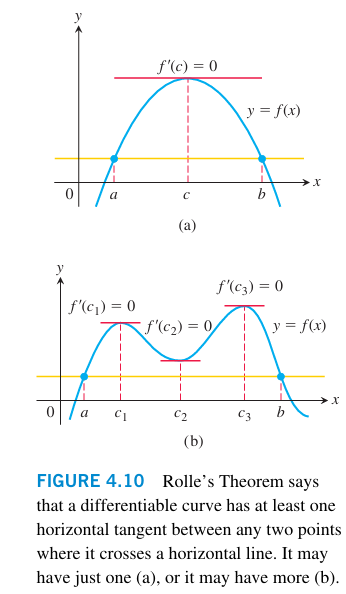
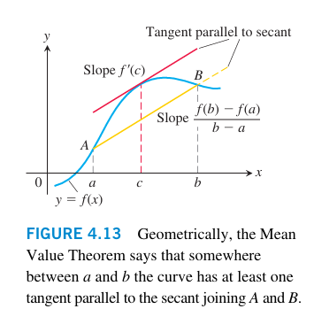
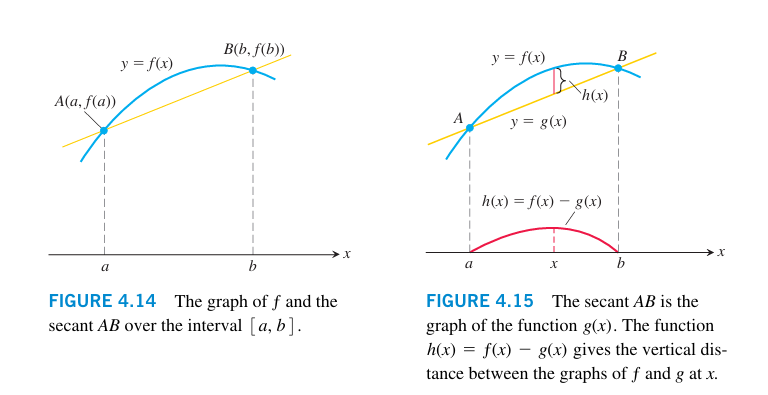
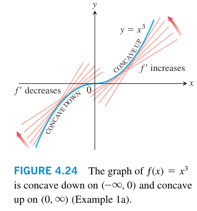

4.Applications of Derivatives
极值
极值
函数在某一区间内取得的最大值和最小值称为极值。极值可以分为局部极值和全局极值。
- 局部极值：函数在某一点处的值大于或小于其邻域内其他点的值。
- 全局极值：函数在整个定义域内的最大值或最小值。
驻点
驻点是指函数在某一点处的导数为零或不存在的点。驻点可能是极值点，也可能不是极值点。
可能取到极值的点
- 函数的驻点
- 函数的端点（如果定义域是闭区间）
- 函数的不可导点
寻找极值的步骤
- 求函数的导数并找到驻点。
- 计算导数不存在的点。
- 计算函数在驻点和端点处的值。
- 比较这些值，确定最大值和最小值。
中值定理
罗尔定理
如果函数 在闭区间 上连续，在开区间 上可导，且满足 ，则存在至少一个点 使得 。

证明
设 和 分别为函数 在区间 上的最大值和最小值。
- 如果 ，则 在 上为常数函数，任意 都满足 。
- 如果 ，则 在 上至少有一个最大值点 和一个最小值点 。由于 ，所以最大值和最小值不能同时出现在端点 和 。因此，至少有一个极值点 位于开区间 上。所以找到了一个点，使得 。
拉格朗日中值定理
如果函数 在闭区间 上连续，在开区间 上可导，则存在至少一个点 使得

证明
tips: 证明可以参考罗尔定理的思路，构造辅助函数 ，然后应用罗尔定理。

函数的单调性
单调递增和单调递减
- 函数 在区间 上单调递增则意味着对于任意 ，如果 ，则有 。
- 函数 在区间 上单调递减则意味着对于任意 ，如果 ，则有 。
判断单调性的方法
在区间上连续，可导（去掉端点）
- 如果 ，则 在该区间上单调递增。
- 如果 ，则 在该区间上单调递减。
极值与单调性的关系
- 如果函数在某点的导数由正变负，则该点为局部极大值点。
- 如果函数在某点的导数由负变正，则该点为局部极小值点。
- 如果函数在某点的导数不变号，则该点不是极值点。
凹凸性与拐点
凹函数与凸函数
- 函数 在区间 上是凹函数(concave down)，那么在上单调递减，。
- 函数 在区间 上是凸函数(concave up)，那么在上单调递增，。

拐点（Inflection Point）
拐点是指函数的凹凸性发生变化的点。函数在该点的二阶导数由正变负或由负变正。
在拐点时，二阶导数等于零或不存在
极值的二阶导数判别法
当时，
- 如果 ，则 是局部极小值。
- 如果 ，则 是局部极大值。
- 如果 ，则该方法无法判别，需要进一步分析。
牛顿迭代法
牛顿迭代法(Newton’s Method)是一种用于求解方程 的数值方法。其基本思想是利用函数的切线来逼近根的位置。
迭代公式
设初始猜测值为 ，则迭代公式为：